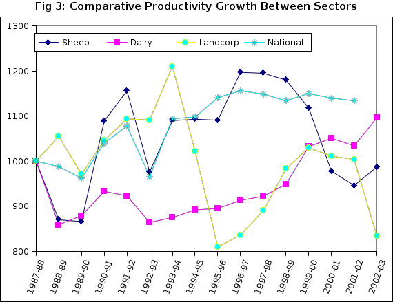

By
Robin Johnson 1
Previous papers at this conference over the years have dealt with trends in productivity in the total agricultural sector, the forestry sector and the dairy sector. Productivity indexes were developed by the Tornquist methodology that produces index numbers free of base year bias. Sources of data are the national accounts for the total agricultural and forestry sectors and designated farm surveys for the dairy and sheep sectors. The surveys are taken as representative of the whole in such calculations. In this paper we analyse the Meat and Wool Information Economic Service (MWI) survey of sheep and beef farms for the past 20 years and develop an index of whole farm productivity (total productivity) free of base year bias. Some technical comparisions are made with productivity trends in Landcorp which had a fairly similar product mix in the period concerned.
Productivity analysis is useful in isolating underlying trends in efficiency in a sector or industry apart from price and income variations. The analysis utilises index numbers that are formulated to reflect as true as possible changes in the productive use of physical resources.
The models employed are based on the Solow methodology. Basicly, the production function is assumed Cobb Douglas with total output as a function of labour, capital and non-factor inputs. The identity of resources used to output produced is completed by adding another variable representing efficiency gains from better organisation and better input qualities etc. This remains unmeasured and is included in the error terms of the Cobb Douglas specification. Solow called this 'the residual' and it includes all the unmeasured factors which might bear on changes in efficiency in production. In what follows, the production function is assumed to employ non-factor inputs so the residual includes influences not taken into account after labour, capital and non-factor inputs are accounted for.
For sources of data, we employ standard farm surveys like MWIES and Dexcel or national income statistics which are aggregations of the farm surveys under certain circumstances. This assumes that the farm surveys are representative of the whole population to which they refer. National income statistics are representative of the sectors from which they are drawn.
We use the Tornqvist formulation of the divisia index number. To overcome the base year bias problem in volume indexes (and price indexes), the Tornqvist discrete approximation to a Divisia Index defines the output index, O * t , as the weighted change in the proportions of its base weighted and current weighted components:
(1) O * t = ∑i(Oti/Ooi)1/2 (wti + woi)
where wti = the share of the ith output (jth input) in total nominal output (input) in year t, and
woi = the share of the ith output (jth input) in total nominal output (input) in the base year.
This can be transformed by logarithms to the base e to give the estimation formula:
(2) ln O * t = ∑i 1/2 (wti + woi) ( ln Oti - ln Ooi)
By taking anti-logs, the base year takes on a value of unity. The resulting index numbers now represent a moving weighted geometric average of base year output quantities and the current output quantities.
In more practical terms, one assembles the values for the mix of products or inputs and deflates them with an appropriate price index. These are then volume indexes for each product or input category. Tornqvist weighting is bringing these products or inputs together in one volume index in a way that is representative of changes in the mix. As equation (2) shows, we weight by the average of the value shares in the current year and the base year i.e. a system of moving weights.
The productivity index is the ratio of weighted output to the index of weighted input. This is whole farm productivity and is not to be confused with factor productivity. Forbes and Johnson talk about total input productivity for the whole farm concept (TIP). DEXCEL have shortened this to TP. Factor productivity is the ratio of real net income to the factors labour and capital divided by the weighted index of capital and labour inputs.
As explained previously, this definition of productivity relates to the use of real measured resources used only. In Solow terms, the difference between inputs and outputs as measured or changes in the ratio is due to 'unexplained' or unmeasured factors bearing on better organisation of farm resources.
For the output index, we divide the income stream into livestock products and wool. We deflate these series by the MWI export price indexes for all products and wool respectively.
For the input index, we divide the expenditure stream into fertiliser/lime/seeds (FLS), R&M, and other expenses (O), excluding wages, interest on borrrowings and depreciation. The latter two are regarded as book entries on the use of capital resources and are not required in getting to a real measure of capital use. Wages are re-allocated to residual farm income as part of the total reward to labour. Price series for FLS, R&M and O are taken from Statistics NZ farm input prices; 'fertiliser', 'maintenance', and 'taxes'.
Labour employed is measured by the MWI as the total of owners', managers', permanent, and casual labour in their survey. Capital employed is measured by deflating the balance sheet assets by suitable price indexes. Land and Buildings by the Quotable Value NZ index of 'rural' farm land prices at year end, plant and machinery by the Statistics NZ index of plant machinery and equipment in the capital goods price index at the beginning of the year; and livestock valuation by the Statistics NZ index of livestock purchased prices on 'sheep farms' as at the month of December.
Weights for the output series are the relative sales proportions of livestock products and wool each year. Weights for the input index are the the proportions of FLS, R&N, O, L and C. in total income each year. FLS, R&M and O are the accounting entities for these items; C is the opportunity cost of total real assets at 4% per year and L is the residual labour income left to farmers and employees after the above four are deducted from total farm revenue.
Table 1 shows the weighted indexes for output, inputs and TIP for the period since 1987-88. Table 2 shows the partial productivities for FLS, R&M, Other, Labour and Capital stocks. Chart 1 corresponds to Table 1 and Chart 2 corresponds to Table 2.
| Table 1: Productivity Indexes for Economic Service Sheep farm sample 1987-88 to 2002-03 | |||
|---|---|---|---|
| Season | Total Output | Total Input | TIP |
| 1987-88 | 1000 | 1000 | 1000 |
| 1988-89 | 866 | 996 | 870 |
| 1989-90 | 902 | 1041 | 866 |
| 1990-91 | 1017 | 934 | 1089 |
| 1991-92 | 1104 | 955 | 1156 |
| 1992-93 | 1031 | 1056 | 976 |
| 1993-94 | 1163 | 1067 | 1090 |
| 1994-95 | 1144 | 1048 | 1093 |
| 1995-96 | 1183 | 1085 | 1091 |
| 1996-97 | 1320 | 1122 | 1177 |
| 1997-98 | 1358 | 1136 | 1195 |
| 1998-99 | 1330 | 1127 | 1180 |
| 1999-00 | 1431 | 1281 | 1118 |
| 2000-01 | 1479 | 1513 | 978 |
| 2001-02 | 1490 | 1575 | 946 |
| 2002-03 | 1472 | 1492 | 987 |
| Table 2: Partial Productivities for Economic Service Sheep farm sample 1987-88 to 2002-03 | |||||
|---|---|---|---|---|---|
| Season | FLS | R&M | Labour | Other | Capital |
| 1987-88 | 1000 | 1000 | 1000 | 1000 | 1000 |
| 1988-89 | 737 | 832 | 889 | 958 | 754 |
| 1989-90 | 781 | 747 | 902 | 953 | 773 |
| 1990-91 | 999 | 923 | 1029 | 1182 | 929 |
| 1991-92 | 983 | 1065 | 1118 | 1276 | 954 |
| 1992-93 | 680 | 901 | 1018 | 1099 | 852 |
| 1993-94 | 726 | 886 | 1142 | 1245 | 996 |
| 1994-95 | 726 | 930 | 1138 | 1148 | 1045 |
| 1995-96 | 703 | 974 | 1183 | 1135 | 1046 |
| 1996-97 | 672 | 1080 | 1337 | 1325 | 1103 |
| 1997-98 | 639 | 1029 | 1375 | 1326 | 1168 |
| 1998-99 | 629 | 931 | 1347 | 1333 | 1142 |
| 1999-00 | 601 | 913 | 1431 | 1307 | 1062 |
| 2000-01 | 473 | 733 | 1443 | 1148 | 915 |
| 2001-02 | 480 | 672 | 1394 | 1169 | 835 |
| 2002-03 | 507 | 778 | 1376 | 1213 | 885 |
Average output has increased steadily at 2.6% per year since 1987-88. Up to 1998-99 total input increased at less than this rate but has since increased significantly to give overall growth of inputs at 3.5%. As a result, productivity has turned downwards over these latter years. As shown below there has been a build-up of capital assets and R&M in recent years which results in a down-turn in the productivity measure. The partial productivities show that labour has been used most economically followed by other expenses, assets, R&M and FLS in that order. Apparently, higher outputs cannot be obtained without higher input of fertiliser, lime and seeds and repairs and maintenance have to be kept up to date.
The level of inputs fluctuates with the cash flow on farms. In down years productivity rises faster. This is generally explained by an investment hypothesis whereby the build-up of current expenditure in good cash flow years represents higher investment in the productive capacity of sheep farm properties. On the other hand, when expenditure is rationed, previous investment comes through in the form of higher output and hence productivity.
Table 3 and Chart 3 show comparisions of the sheep sector with the dairy sector (Anderson and Johnson 2002), Landcorp and the national average (from national income data)(Forbes and Johnson 2000). Landcorp has a similar product mix to the sheep sector and should show some similarities (Landcorp data published by special permission).
Landcorp does not follow the sheep sector particularly well especially after 1994. This appears to be due to a change in valuation method at Landcorp around this time which made the MWI price indexes inapplicable. (In the case of Landcorp a better result was obtained by estimating the direct weight of livestock sold off farms instead of the price index methodology). Dairy owner-occupiers show a low rate of productivity growth in the early 1990s but a steady increase of around 2.4% per year since. National productivity growth was not as good as the sheep sector up to 1998 but has not declined in the the way the sheep sector has since (see explanation above). National productivity grew at 0.8% over the period since 1987-88.
| Table 3: Comparative Productivity Growth between Sectors | ||||
|---|---|---|---|---|
| Season | Sheep | Dairy | Landcorp | National |
| 1987-88 | 1000 | 1000 | 1000 | 1000 |
| 1988-89 | 870 | 859 | 1055 | 988 |
| 1989-90 | 866 | 879 | 971 | 962 |
| 1990-91 | 1089 | 933 | 1046 | 1040 |
| 1991-92 | 1156 | 923 | 1094 | 1078 |
| 1992-93 | 976 | 864 | 1091 | 966 |
| 1993-94 | 1090 | 875 | 1210 | 1094 |
| 1994-95 | 1093 | 892 | 1022 | 1098 |
| 1995-96 | 1091 | 895 | 810 | 1141 |
| 1996-97 | 1177 | 913 | 836 | 1156 |
| 1997-98 | 1195 | 922 | 890 | 1149 |
| 1998-99 | 1180 | 949 | 983 | 1134 |
| 1999-00 | 1118 | 1032 | 1030 | 1150 |
| 2000-01 | 978 | 1051 | 1011 | 1140 |
| 2001-02 | 946 | 1034 | 1004 | 1134 |
| 2002-03 | 987 | 1096 | 834 | n.a. |
Figure 3

Landcorp showed steady growth from 1987-88 to 1993-94 and then changed its method of accounting for livestock sales. This resulted in Landcorp recording a fall in overall output in 1994-95 and 1995-96. With the same input structure, productivity on resources used dropped. It has to be questioned whether the MWI price indexes are applicable to Landcorp over this period. Output then recovered in the following years and productivity increases followed as well until 2002-03 when total inputs increased rapidly as Landcorp embarked on a new investment program. The productivity measure fell off as a result. It should rise steadily again as the investment program bears fruit.
If the same methodology was followed throughout, the national result should be approximately the average of the component sector parts. As indicated, sheep, dairy and Landcorp are based on farm accounts while the national estimate is based on the aggregates of the national income statistics. Bryan Philpott disaggregated the national accounts a few years ago and estimated that horticulture was the key to productivity growth in agriculture as measured in terms of factor productivity (Table 4). Factor productivity growth tends to be higher than total input or whole farm productivity:
| Table 4. Sectoral factor productivity and type of farming (% growth rates) 1983-93 | |||
|---|---|---|---|
| Factor Input | Factor Output | TFP | |
| (% per year) | (% per year) | (% per year) | |
| Sheep | -0.9 | 1.0 | 1.9 |
| Dairy | 1.0 | 1.8 | 0.8 |
| Horticulture | 5.0 | 13.2 | 7.9 |
| ALL FARMS | -0.6 | 3.8 | 4.4 |
| (Source: Philpott 1994) | |||
Ann Anderson and Robin Johnson (2002), Recent trends in dairy farm productivity, NZARES, Blenheim.
Forbes, R., and Johnson, R., (2000), Recent Trends in New Zealand Agricultural Productivity, www.agribusiness.asn.au/review/2001, AARES, Sydney.
Philpott. B.P. (1994), Productivity Growth by Type of Farming 1972-93, RPEP Paper 259, Research Project on Economic Planning, Victoria University, Wellington.